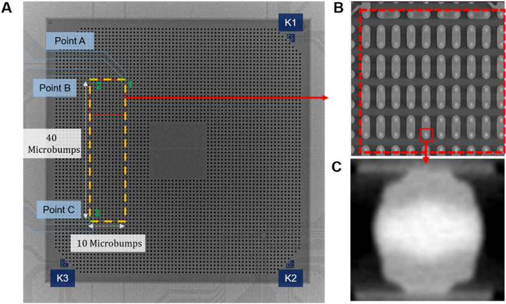
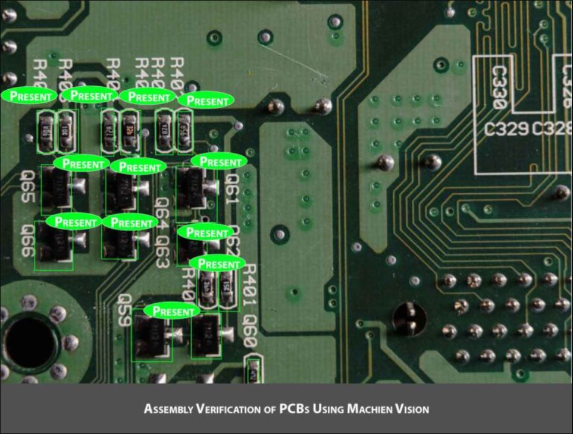
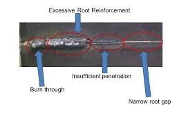
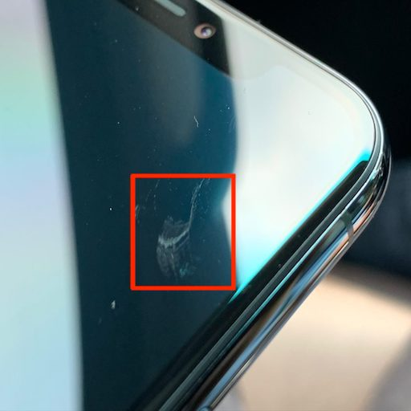
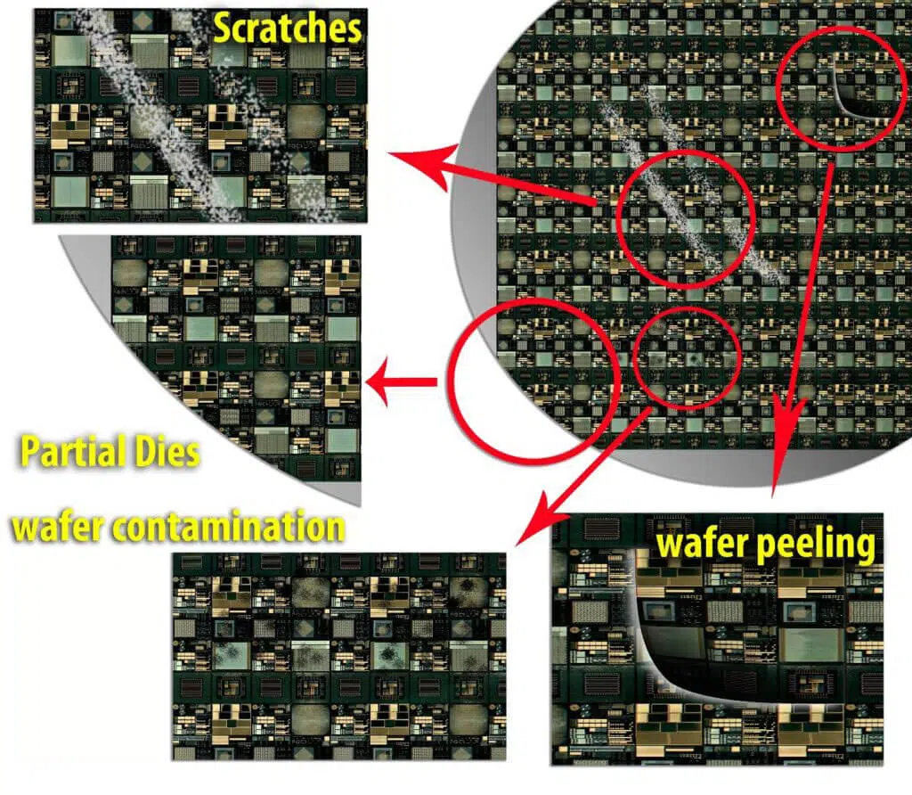

Loading...
Electronics
Electronics

IC probe
Integrated circuit and artificial intelligence technology are inseparable. Artificial intelligence technology depends on the learning ability and computing power of computers and other machines. In this process, integrated circuits provide hardware support for the operation of artificial intelligence algorithms.

PCB probe
The benefits of using AI in the PCB manufacturing industry are enormous. It can provide improved PCB performance, reduced manufacturing cost, faster assembly turnaround, better material management, reduced scrap waste, improved computer communication, inspection and debugging assistance.

Welding/ Soldering probe
Soldering is used to form a permanent connection between electronic components. Solder is a metallic "glue" that holds the parts together and forms a connection that allows electrical current to flow. AI is used to identifying proper and improper welding/soldering.

Surface probe
Take surface quality into your own hands. Faster and more reliable than test inks. Measure non-surface energy in seconds with a single click. Learn more here! Global market leader. First class tools. High precision settings.
Battery probe
Battery ai uses both artificial intelligence and empirical models to predict battery health in the short and longterm – without resorting to impractical, time-consuming and destructive testing procedures.

Display probe
AI Virtual SmartSensor Platform, which combines ultrasound sensor data with standard smartphone data, improves gesture recognition and enables presence detection of phones. Other modules in the AI virtual smart sensor platform include INNER REFLECTION (a virtual presence sensor) and INNER MAGIC (a virtual touchless gesture sensor).

Component position probe
These algorithms can also be used to design new PCBs after training. This reduces time to market and high costs due to trial and error methods.

Consumer product final probe
AI is used to optimize energy grids by managing energy flows between homes, businesses, storage batteries, renewable energy sources, microgrids and the power grid. This will reduce energy wastage while increasing consumer engagement with energy consumption.

Wafer defect probe
AI-powered visual inspection uses computer vision AI to analyse machinery, production processes, inventory levels, and workplaces to ensure safe, efficient, and effective business processes.


© Adople AI, All Right Reserved.